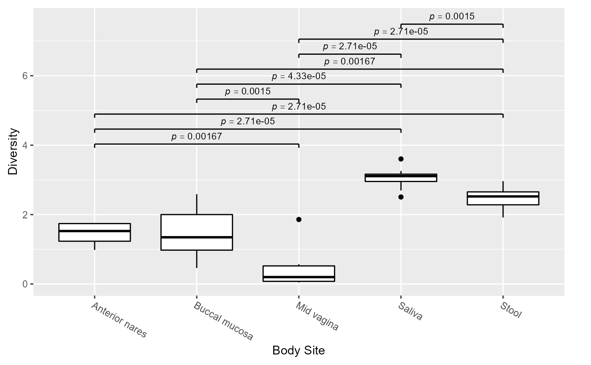
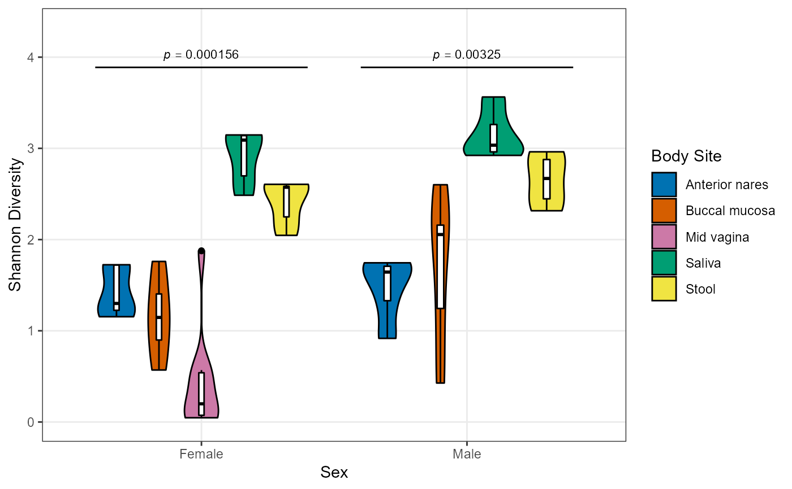
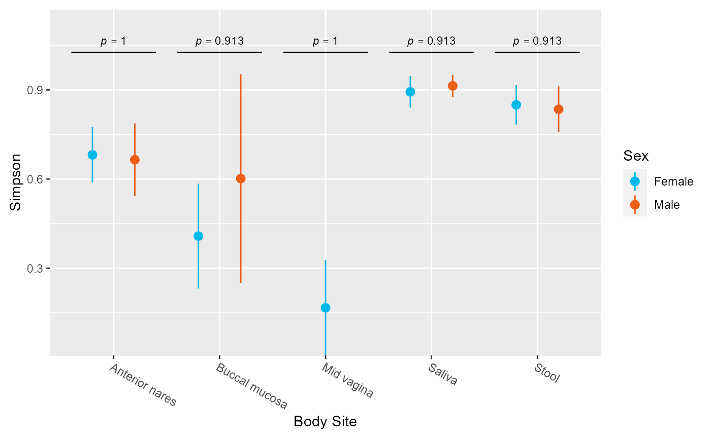

Provide two terms to plot() and it will automatically produce the
appropriate chart type. The terms that plot understands and valid
combinations are listed in the Details section. Not all parameters are used
by all chart types.
# S3 method for BIOM
plot(
x,
formula,
layers = "rls",
color.by = NULL,
pattern.by = NULL,
shape.by = NULL,
label.by = NULL,
sort.by = NULL,
facet.by = NULL,
xvals = NULL,
colors = NULL,
patterns = NULL,
shapes = NULL,
facets = NULL,
rank = NULL,
taxa = NULL,
p.top = Inf,
p.adj = "fdr",
p.label = 0.05,
perms = 1000,
ci = 95,
rline = NULL,
xlab.angle = "auto",
weighted = TRUE,
abbr = TRUE,
other = FALSE,
gradient = heat.colors(20),
normalize.rows = TRUE,
dist = "euclidean",
model = y ~ x,
regr = lm,
safe = FALSE,
...
)A BIOM object, as returned from read.biom.
Combination of terms to plot, either in y ~ x or
c("x", "y") form.
See "Layers" section for details. Options for super box
plots are box, bar (r), violin, dot,
strip, crossbar, errorbar, linerange, and
pointrange. Options for ordination plots are: point,
spider, ellipse, and name for samples,
and mean, taxon, and arrow for taxa biplots.
Single letter abbreviations are also accepted. For instance,
c("box", "dot") is equivalent to c("b", "d") and
"bd". Default: "rls" for super box plots and "pce"/"p" for
ordinations with/without a color.by argument.
Metadata
column to color, pattern, shape, label, sort, and/or facet by. If
that column is a factor, the ordering of levels will be
maintained in the plot.
Names of the colors, patterns,
shapes, facets, and/or x values to use in the plot. Available values
for colors, patterns, and shapes are given by colors(),
gridpattern::names_magick, and 0:25,
respectively. Use a named character vector to map them to specific
factor levels in the metadata. facets and xvals are
coerced to unnamed character vectors. If the length of these vectors
is less than the values present in their corresponding metadata
column, then the data set will be subseted accordingly.
What rank of taxa to display. E.g. "Phylum", "Genus", etc. Run
taxa.ranks() to see all options for a given BIOM object. The
default, NULL, selects the lowest level.
Which taxa to display. An integer value will show the top n
most abundant taxa. A value 0 <= n < 1 will show any taxa with that
mean abundance or greater (e.g. 0.1). A character vector of
taxon names will show only those taxa. (Default: 10 for
heatmaps, 5 otherwise.)
For RANK ~ . (taxa abundance) plots or
BDIV ~ ORD ordination biplots, only display taxa with the most
significant differences in abundance. If p.top is >= 1, then
the p.top most significant taxa are displayed. If p.top
is less than one, all taxa with an adjusted p-value <= p.top
are displayed. Recommended to be used in combination with the
taxa parameter to set a lower bound on the mean abundance of
considered taxa. (Default: Inf)
Method to use for multiple comparisons adjustment of p-values.
Run p.adjust.methods for a list of available options.
(Default: fdr)
Minimum adjusted p-value to display on the plot with a bracket.
Set to Inf to display all p-values, or -Inf for no brackets.
If a numeric vector with more than one value is provided, they will be
used as breaks for asterisk notation. For ordinations, p.label
applies to biplot taxa. (Default: 0.05)
Number of random permutations to use for estimating statistical
significance in BDIV ~ ORD ordinations. (Default: 1000)
How to calculate min/max of the crossbar,
errorbar, linerange, and pointrange layers.
Provide a number between 75 and 100 to define a confidence interval's
confidence level, commonly 95 or 97.5. Other options are:
range,
sd (standard deviation),
se (standard error), and
mad (median absolute deviation).
The center mark of crossbar and pointrange represents
the mean, except for mad in which case it represents
the median. Trendlines require a confidence interval value.
Set to NULL to disable. Default: 95
On rarefaction plots, highlight this rarefaction depth with a dashed line. (Default: NULL)
How to rotate the tick labels on the x-axis. 'auto' (the default), automatically selects a rotation value. 0, 30, and 90 sets the angle to horizontal, angled, and vertical, respectively.
When employing a beta diversity metric, use the weighted
version. (Default: TRUE)
When selecting taxa by name, allow abbreviated 'taxa' values,
e.g. c('staph', 'lact'). (Default: TRUE).
Should non-selected taxa be displayed as an "Other" group?
(Default: FALSE)
For heatmaps, the color gradient to use for the cells.
(Default: heat.colors(20))
For heatmaps, should each row (taxon) have its
values rescaled from min-max to 0-1. (Default: TRUE)
For RANK ~ CLUST, the distance metric to use.
(Default: "euclidean")
For regressions, the formula to use in the smoothing function.
For example: y ~ x, y ~ log(x), or y ~ poly(x,2).
(Default: y ~ x)
For BDIV ~ ORD, the number of random permutations to
use when calculating adonis statistics. (Default: 999)
If FALSE, data.frame column names such as
".metric" will be auto-converted to "Metric" to improve
human-readability. Conversion if aborted if a conflict is found with
a metadata column name. (Default: FALSE)
Parameters for underlying functions.
See "Additional Parameters" section for details.
For heatmaps, ... is handled by pheatmap::pheatmap().
Otherwise, parameters are matched to formal arguments of ggplot2
functions. Prefixing parameter names with a layer name ensures that
a particular parameter is passed to, and only to, that layer. For
instance, dot.size = 2 or d.size = 2 ensures only the
dotplot layer has its size set to 2.
A ggplot2 plot. The computed data points and statistics will
be attached as attr(p, 'data') and attr(p, 'stats'),
respectively.
Shapes can also be given as their string values, defined in pch_table here:
https://github.com/tidyverse/ggplot2/blob/master/R/geom-point.r . Note that
some shapes have a colored outline given by color, some are filled with
color, and some are outlined in color and filled with fill. See
https://blog.albertkuo.me/post/point-shape-options-in-ggplot/ for details.
To expand the low end of the y axis, you can set y.trans = "sqrt" or
y.trans = "log1p". The former applies a square-root transformation,
and the latter plots log(y + 1). Both of these methods work well with data
that contains zeroes.
Terms come in the nine categories given below. The values are case-insensitive and can be unambiguously abbreviated.
Ordination Method (ORD):
PCoA, tSNE, or NMDS.
Alpha Diversity Metric (ADIV):
OTUs, Shannon, Chao1, Simpson,
and InvSimpson. Multiple allowed.
Beta Diversity Metric (BDIV):
Manhattan, Euclidean, Bray-Curtis, Jaccard,
or UniFrac.
Distance Formula (DIST):
correlation, euclidean, maximum, manhattan,
canberra, binary, or minkowski.
Taxonomic Rank (RANK):
Kingdom, Phylum, Class, Order,
Family, Genus, Species, Strain, and
OTU. Multiple allowed. Supported ranks will vary by BIOM. Run
taxa.ranks(biom) to see the available options.
Individual Taxon (TAXON):
The name of a taxon from the BIOM's taxonomy().
For instance, Firmicutes or Prevotella.
Metadata (FACTOR or NUMERIC):
The name of a column from the BIOM's metadata().
For instance, `Body Site` or Age.
Clustering Method (CLUST):
average, ward, mcquitty, single,
median, complete, or centroid. The following
aliases are also understood: heatmap = complete,
UPGMA = average, WPGMA = mcquitty,
WPGMC = median, and UPGMC = centroid.
Special:
Rarefied, Reads, Samples, ., stacked
| Combination | Chart Type | Example |
| ADIV ~ . | Box Plot | plot(hmp50, Shannon ~ .) |
| ADIV ~ FACTOR | Box Plot | plot(hmp50, Shannon ~ `Body Site`) |
| BDIV ~ FACTOR | Box Plot | plot(hmp50, Bray ~ Sex) |
| RANK ~ . | Box Plot | plot(hmp50, Phylum ~ .) |
| TAXON ~ FACTOR | Box Plot | plot(hmp50, Firmicutes ~ Sex) |
| ADIV ~ NUMERIC | Scatter Plot | plot(hmp50, Shannon ~ Age) |
| ADIV ~ ADIV | Scatter Plot | plot(hmp50, Depth ~ OTUs) |
| TAXON ~ NUMERIC | Scatter Plot | plot(hmp50, Prevoltella ~ BMI) |
| BDIV ~ CLUST | Heatmap | plot(hmp50, UniFrac ~ ward) |
| RANK ~ CLUST | Heatmap | plot(hmp50, Genus ~ heatmap) |
| BDIV ~ ORD | Ordination | plot(hmp50, Bray ~ NMDS) |
| RANK ~ stacked | Stacked bar | plot(hmp50, Family ~ stacked) |
| Rarefied ~ Reads | Rarefaction | plot(hmp50, Rarefied ~ Reads) |
| Rarefied ~ Samples | Rarefaction | plot(hmp50, Rarefied ~ Samples) |
| Rarefied ~ ADIV | Rarefaction | plot(hmp50, Rarefied ~ Shannon) |
library(rbiom)
biom <- rarefy(hmp50)
plot(biom, Shannon ~ `Body Site`)
#> Error in x[floor(d)] + x[ceiling(d)]: non-numeric argument to binary operator
plot(biom, c(OTUs, Shannon) ~ Sex, layers="vb", color.by="Body Site")
#> Error in x[floor(d)] + x[ceiling(d)]: non-numeric argument to binary operator
plot(biom, Simpson ~ `Body Site`, layers="p", color.by="Sex", xlab.angle=30)
#> Error in x[floor(d)] + x[ceiling(d)]: non-numeric argument to binary operator
# Ordination
plot(biom, bray ~ nmds, color.by="Body Site")

# Dissimilarity boxplots
plot(biom, UniFrac ~ `==Body Site`)
#> Error in x[floor(d)] + x[ceiling(d)]: non-numeric argument to binary operator
# Dissimilarity Heatmap
plot(biom, UniFrac ~ heatmap)

# Taxa abundance boxplots
plot(biom, c(Phylum, Genus) ~ .)
#> Error in (function (x, formula, layers = "rls", color.by = NULL, pattern.by = NULL, shape.by = NULL, label.by = NULL, sort.by = NULL, facet.by = NULL, xvals = NULL, colors = NULL, patterns = NULL, shapes = NULL, facets = NULL, rank = NULL, taxa = NULL, p.top = Inf, p.adj = "fdr", p.label = 0.05, perms = 1000, ci = 95, rline = NULL, xlab.angle = "auto", weighted = TRUE, abbr = TRUE, other = FALSE, gradient = heat.colors(20), normalize.rows = TRUE, dist = "euclidean", model = y ~ x, regr = lm, safe = FALSE, ...) { all_args <- intersect(names(formals(plot.BIOM)), names(match.call())) all_args <- sapply(all_args, function(i) get(i)) all_args <- c(all_args, list(...)) history <- sprintf("plot(%s)", as.args(all_args, fun = plot.BIOM)) remove("all_args") biom <- x if (!is(biom, "BIOM")) stop("Please provide a BIOM object.") params <- list(xval.by = as.vector(x), color.by = color.by, pattern.by = pattern.by, shape.by = shape.by, label.by = label.by, sort.by = sort.by, facet.by = facet.by, xvals = xvals, colors = colors, patterns = patterns, shapes = shapes, facets = facets, rank = rank, taxa = taxa, p.top = p.top, p.adj = p.adj, p.label = p.label, perms = perms, ci = ci, rline = rline, xlab.angle = xlab.angle, weighted = weighted, abbr = abbr, other = other, gradient = gradient, normalize.rows = normalize.rows, dist = dist, model = model, regr = regr, safe = safe, ...) parsed <- parse_formula(biom, formula, .x = params[[".x"]], .y = params[[".y"]]) x <- parsed[["x"]] y <- parsed[["y"]] mode <- parsed[["mode"]] if (identical(x, ".")) { x <- ".all" biom$metadata[[".all"]] <- ".all" } fun <- if (mode == "Rarefied ~ Reads") { plot_rarefied } else if (mode == "Rarefied ~ Samples") { plot_rarefied } else if (mode == "Rarefied ~ adiv") { plot_rarefied } else if (mode == "adiv ~ .") { boxplot } else if (mode == "adiv ~ factor") { boxplot } else if (mode == "adiv ~ numeric") { plot_numeric } else if (mode == "adiv ~ adiv") { plot_numeric } else if (mode == "bdiv ~ ord") { ordination_plot } else if (mode == "bdiv ~ factor") { boxplot } else if (mode == "bdiv ~ clust") { plot_heatmap } else if (mode == "rank ~ .") { boxplot } else if (mode == "rank ~ stacked") { plot_stacked } else if (mode == "rank ~ clust") { plot_heatmap } else if (mode == "taxon ~ factor") { boxplot } else if (mode == "taxon ~ numeric") { plot_numeric } else { stop("Invalid formula of form '", mode, "'") } p <- fun(biom = biom, x = x, y = y, layers = layers, mode = mode, params = params) if (interactive() && !is.null(attr(p, "err", exact = TRUE))) warning(attr(p, "err", exact = TRUE), call. = FALSE) attr(p, "history") <- c(attr(biom, "history"), history) return(p)})(x = biom, formula = c(Phylum, Genus) ~ .): Invalid formula of form 'rank ~ factor'
# Taxa stacked abundance
plot(biom, Phylum ~ stacked)
#> Error in assign_colors(colors, df[[".taxa"]]): could not find function "assign_colors"
# Taxa abundance heatmap
plot(biom, Phylum ~ heatmap)
